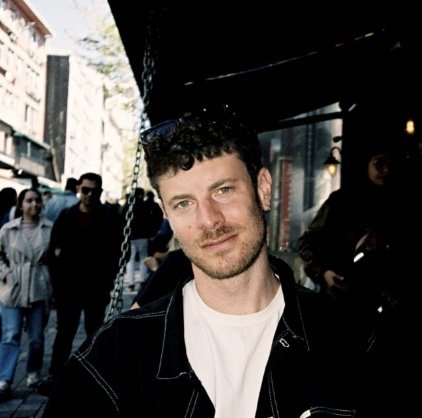

About
Slowdance is run by Jade Matthew and Andy King

Jade Matthew
Lead Producer and Director
Jade is a producer, director and performer with more than ten years in audio drama, television, film and voiceover.
She won a BBC Audio Drama Award for her performance in A Kidnapping on BBC Radio 4. Her acting credits include The Archers, EastEnders, Channel 4's Pure and HBO's My Dinner with Hervé. She has also worked in casting alongside Kharmel Cochrane and Anna Kennedy.
Jade founded Slowdance to develop original drama, and now spends most of her time directing and producing. She directed Duty of Care for Audible.

Andy King
Head of Production
Andy is a filmmaker who makes adverts, documentaries, fashion films and music videos. His work has been featured in The Telegraph, Clash Magazine and GRM Daily.
He started out in 2010 in post production at MPC, working on feature films including Life of Pi, Skyfall and Prometheus. He then worked as a director's assistant at Tantrum on campaigns for Volkswagen, McDonald's, IKEA and Google.
Today he works as a director, creative director, writer and editor. Recent projects include a Hershey's campaign with Christian Pulisic and a documentary series for Comic Relief in Malawi.
Get in touch
We're always happy to hear about new projects.